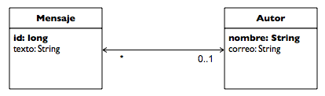
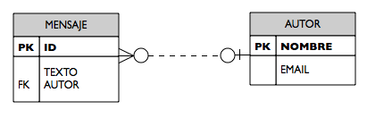
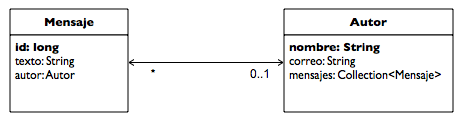
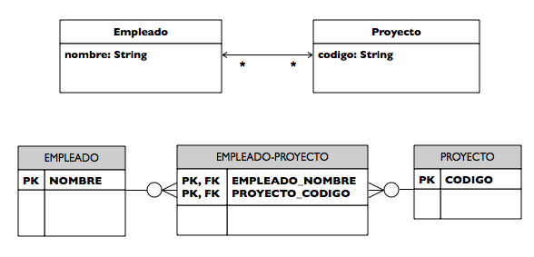

Mapeo entidad-relación: relaciones
Conceptos previos
Antes de comenzar a detallar los aspectos del mapeo de las relaciones entre entidades vamos a repasar algunos conceptos básicos y alguna terminología. Es muy importante tener claro estos conceptos antes de intentar entender los entresijos a los que nos vamos a enfrentar más adelante.
Vamos a ilustrar estos conceptos con la relación que vimos en la sesión 1. Allí definíamos dos entidades, Autor y Mensaje y una relación muchos-a-uno bidireccional de Mensaje a Autor. Un autor puede escribir muchos mensajes.
La relación la representamos con la figura siguiente, en donde se muestran las dos entidades unidas con una flecha con dos puntas que indica que la relación es bidireccional y con la anotación de la cardinalidad de cada entidad bajo la flecha.

El modelo físico que se genera con el mapeado es el que se muestra en la siguiente figura. La tabla MENSAJE contiene una clave ajena hacia la tabla AUTOR, en su columna AUTOR. Los valores de esta columna guardan claves primarias de autores. De esta forma relacionamos cada mensaje con el autor que lo ha escrito. Cuando queramos obtener todos los mensajes de un determinado autor se deberá hacer un SELECT en la tabla MENSAJE buscando todas las filas que tengan como clave ajena el autor que buscamos.

Vamos a ver las distintas características que hay que definir para especificar completamente una relación en el modelo de entidades, utilizando como ejemplo esta relación entre Mensaje y Autor.
Direccionalidad
En primer lugar debemos considerar la direccionalidad de la relación. Nos indica si desde una entidad podemos obtener la otra. Una relación puede ser unidireccional cuando desde la entidad origen se puede obtener la entidad destino o bidireccional, como es el caso del ejemplo, cuando desde ambas partes de la relación se puede obtener la otra parte.
En un diagrama UML, la direccionalidad viene indicada por la dirección de la flecha. En el caso del ejemplo anterior tenemos una relación bidireccional. Podemos pedirle a una instancia de Mensaje que nos diga con que Autor está relacionado. En la entidad de Mensaje habrá un método que devuelve el autor. Y al ser la relación bidireccional podemos hacer lo mismo al revés, podemos pedirle a un Autor que nos diga con qué Mensajes está relacionado. En la entidad Autor hay un método que devuelve una colección de mensajes. Por tanto, los métodos definidos por la relación son:
- En la entidad Mensaje: public Autor getAutor()
- En la entidad Autor: public Collection<Mensaje> getMensajes()>
Podríamos haber escrito estos atributos en la figura anterior, en las entidades, como se muestra en la siguiente figura:

Ambos diagramas son equivalentes. El segundo proporciona más información porque indica el nombre que le damos a los atributos de la relación.
Cardinalidad
La cardinalidad de una relación define el número de instancias de una entidad que pueden estar relacionada con otras. Atendiendo a la cardinalidad, una relación puede ser uno-a-uno, uno-a-muchos, muchos-a-uno o muchos-a-muchos.
En el caso del ejemplo tenemos una relación muchos-a-uno entre Mensaje y Autor. Al ser una relación bidireccional, también podríamos considerar esta relación como una relación uno-a-muchos entre Autor y Mensaje.
Entidad propietaria de la relación
¿Cómo se realiza el mapeo de una relación? La forma más habitual es definir una columna adicional en la tabla asociada a una de las entidades con la clave primaria de la otra tabla con la que está relacionada. Esta columna hace de clave ajena hacia la otra tabla. Decimos que esta entidad cuya tabla contiene la clave ajena hacia la otra es la propietaria de la relación.
En el ejemplo visto, la relación se mapea haciendo que la tabla MENSAJE contenga una clave ajena hacia la tabla AUTOR, como hemos visto en la figura. Decimos entonces que la entidad Mensaje es la propietaria de la relación.
Para especificar las columnas que son claves ajenas en una relación se utilizan las anotaciones @JoinColumn y mappedBy. La primera es opcional y se puede identificar con los valores por defecto. La segunda es obligatoria y es un atributo de la anotación que define la relación: OneToOne, OneToMany o ManyToMany. Como veremos más adelante, este elemento debe indicar el nombre del atributo que representa la clave ajena en la otra entidad.
También es posible mapear una relación utilizando una tabla join, una tabla auxiliar con dos claves ajenas hacia las tablas de la relación. No nos da tiempo en este tema de explicar cómo hacerlo. Si estás interesado puedes consultar en la especificación de JPA.
Sincronización con la base de datos
Ya hemos comentado previamente que una de las características fundamentales del funcionamiento de JPA es que las instancias de las entidades viven en el contexto de persistencia asociado al entity manager hasta que se realiza una operación de flush sobre la base de datos. Normalmente esto sucede cuando se cierra la transacción. En ese momento es cuando el proveedor de persistencia consulta las instancias del contexto y genera las sentencias SQL que actualizan la base de datos. Es interesante tener activo el debug de Hibernate que muestra las sentencias generadas para comprobar en qué momento se realizan y cuáles son.
En el caso de las relaciones, la especificación de JPA avisa literalmente de lo siguiente (el énfasis es del documento original):
Es particularmente importante asegurarse de que los cambios en el lado inverso de una relación se actualizan de forma apropiada en el lado propietario, para asegurarse de que los cambios no se pierden cuando se sincronizan en la base de datos.
Esto es, para que una relación se sincronice correctamente en la base de datos, se debe actualizar la instancia a la que se refiere en la parte propietaria de la relación. En el caso del ejemplo, para añadir una relación entre un Mensaje y un Autor, debemos añadir el autor asociado al mensaje en la instancia Mensaje (la propietaria de la relación). No te preocupes si no te queda demasiado claro. Lo explicamos mejor más adelante con algunos ejemplos, cuando veamos tipos de relaciones concretos.
Definición de relaciones
Detallamos a continuación cómo se especifican las relaciones utilizando anotaciones.
Relación uno-a-uno unidireccional
En una relación uno-a-uno unidireccional entre la entidad A y la entidad B, una instancia de la entidad A referencia una instancia de la entidad B. En la relación A pondremos la anotación @OneToOne en el atributo referente. En la entidad B no hay que añadir ninguna anotación.
Un ejemplo podría ser la relación entre un Empleado y un Despacho (asumiendo que Despacho es una entidad, y no un objeto embebido). El código sería el siguiente:
@Entity
public class Empleado {
// ...
@OneToOne
private despacho Despacho;
// ...
public void setDespacho(Despacho despacho) {
this.despacho = despacho;
}
}
@Entity
public class Despacho {
@Id
String idDespacho;
// ...
}
La entidad Empleado es la propietaria de la relación y en su tabla hay una clave ajena (en la columna despacho) que apunta a la otra tabla. Se puede especificar esta clave ajena con la anotación @JoinColumn:
public class Empleado {
// ...
@OneToOne
@JoinColumn(name="despacho",
referencedColumnName="idDespacho, updatable=false)
private Despacho despacho;
//...
En esta anotación @JoinColumn se especifica el nombre de la columna, el nombre de la columna con la clave primaria en la tabla a la que se apunta y se indica que la columna no puede ser modificada mediante un update.
En el caso de no utilizar la anotación, JPA realizará el mapeo utilizando como nombre de columna el nombre del atributo que guarda la otra entidad y el nombre de la columna con la clave primaria en la otra entidad, uniéndolas con un subrayado ("_"). En este caso, se llamaría empleado_idDespacho.
Para actualizar la relación, basta con llamar al método setDespacho():
em.getTrasaction().begin();
Empleado emp = new Empleado("John Doe");
Despacho desp = new Despacho("C1");
desp.setEmpleado(emp);
em.persist(desp);
em.persist(emp);
em.getTransaction().commit();
Relación uno-a-uno bidireccional
Supongamos que necesitamos modificar la relación anterior para que podamos obtener el empleado a partir de su despacho. Basta con hacer que la relación anterior sea bidireccional. Para ello, debemos añadir el atributo empleado en la entidad Despacho y anotarlo con @OneToOne(mappedBy="despacho"). De esta forma estamos indicando que la entidad Empleado es la propietaria de la relación y que contiene la clave ajena en el atributo despacho.
@Empleado
public class Empleado {
// ...
@OneToOne
private despacho Despacho;
// ...
public void setDespacho(Despacho despacho) {
this.despacho = despacho;
}
}
@Entity
public class Despacho {
// ...
@OneToOne(mappedBy="despacho")
private empleado Empleado;
// ...
public Empleado getEmpleado() {
return this.empleado;
}
}
Hay que destacar la utilización del elemento mappedBy en el atributo despacho. Con ese elemento estamos indicando al proveedor de persistencia cuál es la clave ajena en la entidad Empleado.
Para actualizar la relación hay que hacer lo mismo que antes, utilizar el método setDespacho() del objeto Empleado pasándole el Despacho con el que está relacionado. Hay que hacer notar que es muy importante actualizar el lado de la relación que es el propietario de la misma y que contiene la clave ajena. Si lo hiciéramos al revés y actualizáramos el atributo empleado del Despacho tendríamos la desagradable sorpresa de que la relación no se actualiza en la base de datos. Por ello sería incorrecto hacer lo siguiente:
em.getTransaction().begin();
Empleado emp = new Empleado("John Doe");
Despacho desp = new Despacho("C1");
desp.setEmpleado(emp);
em.getTransaction().commit();
Sería incorrecto porque estamos actualizando el lado inverso de la relación, no el lado propietario. Aunque la relación es bidireccional, la actualización sólo se puede hacer en el lado del propietario de la relación. Para evitar posibles errores, lo mejor es implementar únicamente el método set en el lado del propietario de la relación y en el otro lado (en la entidad Empleado) poner como private el atributo de la relación y no definir ningún método set.
Relación uno-a-muchos/muchos-a-uno bidireccional
En una relación uno-a-muchos bidireccional entre la entidad A y la B (que es equivalente a una relación muchos-a-uno bidireccional entre B y A), una instancia de la entidad A referencia a una colección de instancias de B y una instancia de B referencia a una instancia de A. La entidad B debe ser la propietaria de la relación, la que contiene la clave ajena a la entidad A.
En la entidad B se define un atributo del tipo de la entidad A, con la anotación @ManyToOne. En la entidad A se define un atributo del tipo Collection<B> con la anotación @OneToMany(mappedBy="a") que indica el nombre de la clave ajena.
El ejemplo que presentamos al comienzo del capítulo es de este tipo. Otro ejemplo podría ser el de la relación entre un departamento y los empleados. Un Departamento está relacionado con muchos Empleados. Y un Empleado pertenece a un único Departamento. De esta forma el Empleado hace el papel de propietario de la relación y es quien llevará la clave ajena hacia Departamento. Lo vemos en el siguiente código:
@Entity
public class Empleado {
// ...
@ManyToOne
@JoinColumn(name="departamento", referencedColumnName="idDepartamento")
private departamento Departamento;
// ...
public void setDepartamento(Departamento departamento) {
this.departamento = departamento;
}
}
@Entity
public class Departamento {
// ...
@OneToMany(mappedBy="departamento")
private Collection<Empleado> empleados = new HashSet();
// ...
public Collection<Empleado> getEmpleados() {
return this.empleados;
}
}
En la declaración se podría eliminar la anotación @JoinColumn y el nombre de la columna con la clave ajena se obtendría de la misma forma que hemos visto en la relación uno-a-uno.
Como también hemos dicho anteriormente, la relación se actualiza insertando el nuevo Departamento en la instancia Empleado (la propietaria de la relación) con el método setDepartamento(), de esta forma nos aseguraremos que la relación se guarda en la base de datos. Sin embargo, también es importante actualizar la colección en el otro lado de la relación. La llamada a getEmpleados() es sobreescrita por JPA y es implementada por una consulta a la base de datos, pero si queremos utilizar inmediatamente la colección de empleados, debemos actualizar su contenido:
Collection empleados = depto.getEmpleados(); emp.setDepartemnto(depto); empleados.add(emp);
Relación muchos-a-uno unidireccional
En una relación muchos-a-uno unidireccional entre las entidades A y B, una instancia de A está relacionada con una instancia de B (que puede ser la misma para distintas instancias de A). Para definir la relación hay que definir en la entidad propietaria A un atributo que define la clave ajena hacia la entidad B. Al ser una relación unidireccional no podremos obtener desde la entidad B su entidad relacionada A, por lo que no hay que definir ningún atributo adicional.
Por ejemplo, podríamos definir una relación entre Empleado y Categoria en la que muchos empleados pueden pertenecer a la misma categoria y no nos interesa listar los empleados de una determinada cualificacion:
@Empleado
public class Empleado {
// ...
@ManyToOne
@JoinColumn(name="categoria", referencedColumnName="idCategoria")
private categoria Categoria;
// ...
public void setCategoria(Categoria categoria) {
this.categoria = categoria;
}
}
@Entity
public class Categoria {
// ...
}}
Relación muchos-a-muchos bidireccional
En una relación muchos-a-muchos bidireccional entre la entidad A y la entidad B, una instancia de A está relacionada con una o muchas instancias de B (que pueden ser las mismas para distintas instancias de A). Desde la instancia A se puede obtener la colección de instancias de B con las que está relacionada y viceversa.
Por ejemplo, un Empleado puede participar en más de un Proyecto. Dado un empleado se puede obtener la lista de proyectos en los que participa y dado un proyecto podemos obtener la lista de empleados asignados a él.
Se implementa con las siguientes anotaciones:
@Entity
public class Empleado {
@Id String nombre;
@ManyToMany
private Collection<Projecto> proyectos = new HashSet();
public Collection<Proyecto> getProyectos() {
return this.proyectos;
}
public void setProyectos(Collection<Proyecto> proyectos) {
this.proyectos = proyectos;
}
// ...
}
@Entity
public class Proyecto {
@Id String codigo;
@ManyToMany(mappedBy="proyectos");
private Collection<Empleado> empleados = new HashSet();
public Collection<Empleado> getEmpleados() {
return empleados;
}
// ...
}
La anotación mappedBy apunta a la entidad propietaria de la relación. En este caso es la entidad Empleado.
La relación se mapea, a diferencia de los casos anteriores, utilizando una tabla join. Es una tabla con dos columnas que contienen claves ajenas a las tablas de las entidades. La primera columna apunta a la tabla propietaria de la relación y la segunda a la otra tabla. La siguiente imagen representa el mapeo de la relación anterior.

Al igual que en las otras relaciones, para actualizar la relación hay que modificar el lado propietario de la relación, que es el que se sincronizará con la base de datos. En este caso, en el lado propietario (Empleado) tenemos una colección de proyectos. Para añadir un nuevo empleado a un proyecto hay que obtener la referencia a la colección de proyectos en los que participa el empleado (con el método getProyectos()) y añadir el nuevo proyecto con el método add() de la colección:
Proyecto proyecto = em.find(Proyecto.class, "P04"); Collection<Proyectos> proyectos = empleado.getProyectos(); proyectos.add(proyecto);
Otro ejemplo que podría ser útil es el siguiente, en el que se muestra cómo cambiar a un empleado del proyecto "P01" al proyecto "P04":
Empleado empleado = em.find(Empleado.class, "Miguel Garcia"); Proyecto proyectoBaja = em.find(Proyecto.class, "P04"); Proyecto proyectoAlta = em.find(Proyecto.class, "P01"); empleado.getProyectos().remove(proyectoBaja); empleado.getProyectos().add(proyectoAlta);
Es muy interesante analizar un poco más el código. ¿Por qué funciona correctamente el método remove()? Hay que recordar que que para que funcione correctamente el método, el objeto que se pasa como parámetro debe ser igual (con el método equals()) que el objeto que hay en la colección. Hibernate se encarga de sobrecargar el método equals() para que devuelva true cuando se refieren a la misma instancia de entidad. De esta forma la instancia que se devuelve con el método find() es la misma que hay en la colección obtenida con getProyectos().
Relación muchos-a-muchos unidireccional
En una relación muchos-a-muchos unidireccional entre una entidad A y otra entidad B, cada instancia de la entidad A está relacionada con una o muchas instancias de B (que pueden ser las mismas para distintas instancias de A). Al ser una relación unidireccional, dada una instancia de B no nos interesa saber la instancia de A con la que está relacionada.
Por ejemplo, un Empleado tiene una colección de Patentes que ha desarrollado. Distintos empleados pueden participar en la misma patente. Pero no nos interesa guardar la información de qué empleados han desarrollado una patente determinada. La forma de especificarlo es:
@Entity
public class Empleado {
@Id String nombre;
@ManyToMany
private Collection<Patentes> patentes = new HashSet();
public Collection<Patentes> getPatentes() {
return this.patentes;
}
public void setPatentes(Collection<Patentes> patentes) {
this.patentes = patentes;
}
// ...
}
@Entity
public class Patente {
// ...
}
En el mapeo de la relación se crea una tabla join llamada EMPLEADO_PATENTE con las dos claves ajenas hacia EMPLEADO y PATENTE.
La forma de actualizar la relación es la misma que en la relación bidireccional.
Carga perezosa
Hemos comentado que una de las características de JPA es la carga perezosa (lazy fetching en inglés). Este concepto es de especial importancia cuando estamos trabajando con relaciones.
Supongamos los ejemplos anteriores, con la relación uno-a-muchos entre Departamento y Empleado y la relación muchos-a-muchos entre Empleado y Proyecto. Cuando recuperamos un departamento de la base ese departamento está relacionado con un conjunto de empleados, que a su vez están relacionados cada uno de ellos con un conjunto de proyectos. La carga perezosa consiste en que no se cargan todos los objetos en el contexto de persistencia, sino sólo la referencia al departamento que se ha recuperado. Es cuando se realiza una llamada al método getEmpleados() cuando se recuperan de la base de datos todas las instancias de Empleado con las que ese departamento está relacionado. Pero sólo los empleados. Los proyectos de cada empleado no se cargan hasta que no se llama al método getProyectos() del empleado que nos interese.
Esta funcionalidad hace que la carga de instancias sea muy eficiente, pero hay que saber utilizarla correctamente. Un posible problema puede surgir cuando la instancia original (el Departamento) queda desconectada (detached) del EntityManager (lo veremos en el tema siguiente). Entonces ya no podremos acceder a ningún atributo que no se haya cargado.
Es posible que quereamos desactivar la propiedad por defecto de la carga perezosa. Para ello debemos definir la opción fetch=FetchType.EAGER en la anotación que define el tipo de relación:
@Entity
public class Empleado {
@Id String nombre;
@ManyToMany(fetch=FetchType.EAGER)
private Collection<Patentes> patentes = new HashSet();
// ...
}
También es posible configurar el proveedor de persistencia para que la opción por defecto sea EAGER. En este caso podemos definir una relación como perezosa con la anotación fetch=FetchType.LAZY.